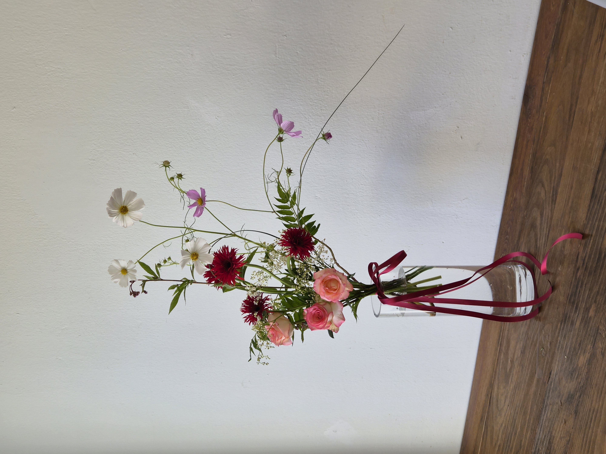

CLASS WORK · HAND-TIED
2026.09.15LINE AND MASS
HAND-TIED BOUQUET
線と量感を生かした白のブーケ
04 / CLASS WORK
CONCEPT
LINE,
MASS & AIR.
화이트와 그린을 중심으로 색을 절제하고, 수국의 풍성한 매스와 호접란·거베라·페니쿰이 만드는 길고 가벼운 선을 대비시킨 핸드타이드 부케입니다.
단단한 중심과 바깥으로 뻗는 선 사이에 충분한 여백을 두어, 같은 화이트 계열 안에서도 소재의 크기와 방향, 질감 차이가 선명하게 읽히도록 구성했습니다.
白とグリーンを中心に色数を抑え、アジサイの豊かなマスと、コチョウラン・ガーベラ・パニカムがつくる長く軽やかなラインを対比させたハンドタイドブーケです。密度のある中心と外へ伸びる線の間に余白を残し、同じ白の中でも素材の大きさ、方向、質感の違いが見えるように構成しました。
COLOR PALETTE
色の構成
WHITE,
GREEN,
TAUPE.
소프트 화이트와 크림 아이보리를 중심으로 한 단색에 가까운 구성을 만들고, 세이지와 딥 그린으로 형태를 분리했습니다. 완성 포장에는 웜 토프를 더해 차분한 대비를 만들었습니다.
ソフトホワイトとクリームアイボリーを中心に、セージと深いグリーンで輪郭を分けました。仕上げのラッピングにはウォームトープを加え、落ち着いたコントラストにまとめています。
SOFT WHITE
#F1F0EACREAM IVORY
#E7E1D4PALE BLUSH
#DED5D8SAGE GREEN
#7F8D69WARM TAUPE
#8F7E70MATERIALS
使用花材
큰 수국으로 중심의 매스를 만들고, 카네이션과 거베라, 알스트로메리아로 화이트 톤의 밀도와 높낮이를 더했습니다. 호접란의 곡선과 페니쿰의 가는 선, 줄쥐똥나무의 잎이 외곽으로 흐르며 전체 실루엣을 가볍게 확장합니다.
大きなアジサイで中心のマスをつくり、カーネーション、ガーベラ、アルストロメリアで白の密度と高低差を加えました。コチョウランの曲線、パニカムの細い線、斑入りプリペットの葉が外側へ流れ、全体のシルエットを軽やかに広げています。
수국
アジサイ
카네이션
カーネーション
거베라
ガーベラ
알스트로메리아
アルストロメリア
호접란
コチョウラン
페니쿰
パニカム
줄쥐똥나무
斑入りプリペット
WHITE · IVORY
SAGE · TAUPE
白とアイボリーを基調に、
セージとトープを重ねた配色。
COMPOSITION
構成とバランス
MASS,
LINE,
SPACE.
수국을 낮고 밀도 있는 중심 매스로 두고, 거베라와 알스트로메리아는 위쪽으로 높이를 달리해 세로 방향의 흐름을 만들었습니다.
왼쪽으로 길게 휘어지는 호접란과 위로 퍼지는 페니쿰을 이용해 중심의 덩어리에서 바깥으로 시선이 확장되도록 했습니다.
매스와 선 사이를 꽉 채우지 않고 여백을 남겨 각 소재의 방향이 분리되어 보이게 하고, 줄쥐똥나무의 가는 가지를 반복해 서로 다른 요소가 자연스럽게 이어지도록 구성했습니다.
アジサイを低く密度のある中心のマスとして置き、ガーベラとアルストロメリアに高低差をつけて縦方向の流れをつくりました。左へ大きく流れるコチョウランと上へ広がるパニカムによって、中心の塊から外側へ視線が広がります。マスとラインの間には余白を残し、素材それぞれの方向が明確に見えるようにしました。
FINAL VIEW
完成したかたち

포장 전 모습에서는 수국의 둥글고 무게감 있는 중심과, 호접란·거베라·페니쿰이 만드는 길고 가벼운 선의 차이가 더욱 분명하게 드러납니다. 한쪽으로 흐르는 곡선과 위로 올라가는 선이 교차하면서 비대칭적인 실루엣과 자연스러운 긴장감을 만듭니다.
ラッピング前の姿では、アジサイの丸く重みのある中心と、コチョウラン・ガーベラ・パニカムがつくる長く軽やかな線の違いがより明確に見えます。横へ流れる曲線と上へ伸びる線が交差し、非対称のシルエットと自然な緊張感を生み出しています。
REFLECTION
制作を振り返って
WEIGHT,
LINE,
BREATH.
큰 꽃이 만드는 시각적인 무게와 가는 선 소재가 만드는 움직임을 한 작품 안에서 함께 다루며, 매스와 라인의 대비를 직접 확인한 작업입니다.
중심을 안정적으로 잡으면서도 선 소재의 길이와 방향을 살리기 위해서는 소재 사이의 여백이 중요하다는 점을 배웠습니다. 다음 작업에서는 외곽으로 뻗는 선의 시작점과 간격을 더 세밀하게 조절해, 중심과 선이 하나의 흐름으로 이어지도록 구성하고자 합니다.
大きな花が持つ視覚的な重さと、細いライン素材が生み出す動きを一つの作品の中で扱い、マスとラインの対比を確認した制作です。中心を安定させながら線の長さと方向を生かすためには、花材の間に残す余白が重要であることも学びました。
중심의 매스를 유지하면서 외곽으로 뻗는 선의 시작점과 간격을 더 자연스럽게 연결하기